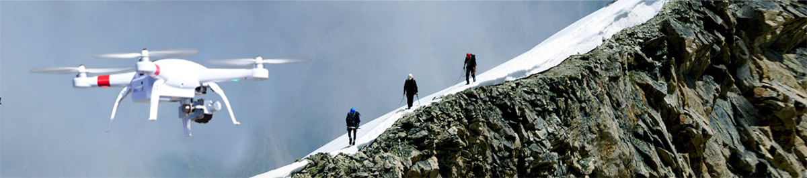

AIN深圳华翔科技技术有限公司）作为无人机创领者以及全球领先的无人机系统提供商，致力于以科技创新产品为全球用户提供前所未能的应用体验,公司是集专业研发、生产及销售为一体的无人机科技企业,总部坐落于中国深圳市宝安区“华翔
科技园”,员工近1000人,拥有近10万平米的现代化研发生产基地,以“军工科技,自主创新”为核心竞争力,无人机系统研发方面,AIN立足于中国,布局于海外,积极拓展全球销售渠道,占据中国警用多旋翼无人机市成为该产业的领军企业，并已在美国欧洲、亚太等发达国家及地区成立了公司,产品以自主品牌畅销全球55个发达国家和地区,并与国内外最具实力的客户建立了长期稳定的战略合作关系

AIN民用无人机产品主要有智控航拍无人机A20、AP12、AP11、AP10及AP列等， 具备领先的三轴云台增稳技术，一体化三轴云台相机和分离式云台模块化设计，专业4K及1080P/100fps超高清视频质量，在智控方面，采用遥控器/手机双重模式，并首创了遥控器分体式设计 ， 拥有自动跟随、室内光流定位、热点环绕、自动起降、自动悬停、一键返航、自主返航、 航线规划等功能及APP智能应用实现语音控制和体感操控，并实时回传飞行数据与图像实时显示.AIN 航拍智控无人机产品主要面向航拍爱好者提供创新的专业级航拍体验,已在体育、旅游、户外运动、婚礼、庆典、广电传媒、广告、摄影.飞行竞技等领域广泛使用。
AIN华翔科技终坚持“专业化、科技创新、规划化、持续发展”的经营理
念，坚持诚信合作及肩负 ：提供创新的科技产品、打造有民族自豪感的国际品
牌”的企业使命力求以领先的军工技术优势，创新的产品设计.高品质的产品和
服务来满足用户的需求将AIN打造成为全球最具实力的一流电子科技企业和国
际一流品牌。
念，坚持诚信合作及肩负 ：提供创新的科技产品、打造有民族自豪感的国际品
牌”的企业使命力求以领先的军工技术优势，创新的产品设计.高品质的产品和
服务来满足用户的需求将AIN打造成为全球最具实力的一流电子科技企业和国
际一流品牌。